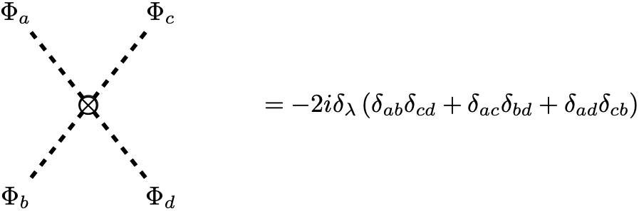
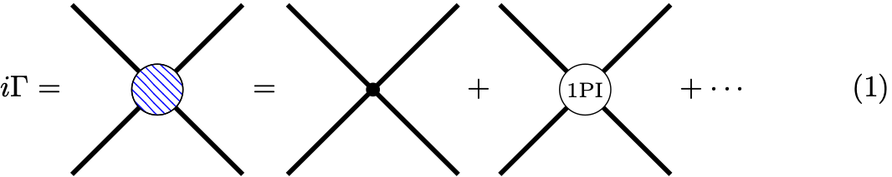
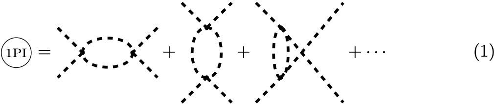

Effective Potential in a Scalar Field Theory
Generic Form
To derive the effective potential, we start with a couple definitions. We define the generating function for greens functions as: $$\begin{align} Z[J] = \int\mathcal{D}\phi\exp(iS[\phi] + \int d^{4}x J(x)\phi(x)) \end{align}$$ This functional generates all possible Feynman diagrams. Not all of these diagrams will be connected. To generate the connected diagrams, we introduce the generating functional for connected diagrams: $$\begin{align} W[J] = -i\ln(Z[J]) \end{align}$$ Even the connected diagrams are not the most fundamental. The most fundamental are the one-particle irreducible (1PI) diagrams. These are generated by a functional which is the Legandre transform of $W[J]$: $$\begin{align} \Gamma[\phi_{\text{cl}}] = W[J] - \int d^{4}x J(x)\phi_{\text{cl}}(x) \end{align}$$ where $$\begin{align} \phi_{\text{cl}}(x) = \dfrac{\delta W[J]}{\delta \phi(x)} \end{align}$$ The effective potential will be given by $$\begin{align} \Gamma[\phi_{\text{cl}}] = -(VT)V_{\text{eff}}(\phi_{\text{cl}}) \end{align}$$ where $VT$ is the volume of space-time. Let’s illustrate how to compute the effective action using the background field method. We begin by expanding $\phi$ about the classical field, taking $\phi_{\text{cl}}$ to be independent of space-time. That is,
$$ \begin{align} \phi(x) = \phi_{\text{cl}} + \eta(x) \end{align} $$
where $\eta(x)$ is a field representing the high momentum degrees of freedom of $\phi(x)$. We now expand the action about $\phi_{\text{cl}}$:
$$ \begin{align} S[\phi(x)] & = S[\phi_{\text{cl}}] + \sum_{n=1}\dfrac{1}{n!}\int d^{4}x_{1} \cdots\int d^{4}x_{n}\dfrac{\delta^{n}S[\phi(x)]}{\delta\phi(x_{1}) \cdots\delta\phi(x_{n})}\\ & = S[\phi_{\text{cl}}] + \int d^{4}y \dfrac{\delta S[\phi(x)]}{\delta\phi(y)}\eta(y) + \dfrac{1}{2}\int d^{4}y \int d^{4}z \dfrac{\delta^{2}S}{\delta\phi(y)\delta\phi(z)}\eta(y)\eta(z) + \cdots \end{align} $$
Thus,
$$ \begin{align} S[\phi] + \int d^{4}y J(y)(\phi(y) +\phi_{\text{cl}}) & = S[\phi_{\text{cl}}] + \int d^{4}y J(y)\phi_{\text{cl}} + \int d^{4}y \eta(y)\left(\dfrac{\delta S[\phi]}{\delta\phi(y)} + J(y)\right)\\ & \qquad + \int d^{4}y\int d^{4}z \eta(y)\dfrac{\delta^{2} S[\phi]}{\delta\phi(y)\delta\phi(z)}\eta(z) + \cdots\notag \end{align} $$
where all the functional derivatives are evaluated at $\phi_{\text{cl}}$. Note that the equations of motion, which $\phi_{\text{cl}}$ satisfies, are
$$ \begin{align} \dfrac{\delta S[\phi]}{\delta\phi(y)}\bigg{|}{\phi=\phi{\text{cl}}} + J(y) = 0 \end{align}$$
Therefore, the term linear term in $\eta$ of the expansion of the action is zero. Now, the functional $Z[J]$ to quadratic order in $\eta$ is:
$$ \begin{align} Z[J] & = \int\mathcal{D}\phi\exp(iS[\phi] + i\int d^{4}y J(y)\phi(y))\notag\\ & = \exp\left(iS[\phi_{\text{cl}}] + i\int d^{4}y J(y)\phi_{\text{cl}})\right)\int\mathcal{D}\eta\exp\left(\dfrac{i}{2}\int d^{4}y\int d^{4}z \eta(y)\dfrac{\delta^{2} S[\phi]}{\delta\phi(y)\delta\phi(z)}\eta(z) +\cdots\right) \end{align} $$
We can explicitly evaluate the functional integral by wick rotating: $t\to i\tau$. Then, $$\begin{align} \int\mathcal{D}\eta\exp\left(-\dfrac{1}{2}\int d^{4}y_{E}\int d^{4}z_{E} \eta(y)\dfrac{\delta^{2} S_{E}[\phi]}{\delta\phi(y)\delta\phi(z)}\eta(z)\right) \propto \left(\det \dfrac{\delta^{2} S[\phi]}{\delta\phi(y)\delta\phi(z)}\right)^{-1/2} \end{align} $$
Now, using
$$ \begin{align} \left(\det \dfrac{\delta^{2} S[\phi]}{\delta\phi(y)\delta\phi(z)}\right)^{-1/2} = \exp\left(-\dfrac{1}{2}\ln\det \dfrac{\delta^{2} S[\phi]}{\delta\phi(y)\delta\phi(z)}\right) \end{align} $$
And thus,
$$ \begin{align} Z[J] = \exp\left(iS[\phi_{\text{cl}}] + i\int d^{4}y J(y)\phi_{\text{cl}} -\dfrac{1}{2}\ln\det \dfrac{\delta^{2} S[\phi]}{\delta\phi(y)\delta\phi(z)}\right) = e^{iW[J]} \end{align} $$
Therefore,
$$ \begin{align} W[J] = S[\phi_{\text{cl}}] + \int d^{4}y J(y)\phi_{\text{cl}} + \dfrac{i}{2}\ln\det \dfrac{\delta^{2} S[\phi]}{\delta\phi(y)\delta\phi(z)} \end{align} $$
Now, the effective action is given by
$$ \begin{align}\label{effective_potential} \Gamma[\phi_{\text{cl}}] & = W[J] - \int d^{4}y J(y)\phi_{\text{cl}}\ & =S[\phi_{\text{cl}}] + \int d^{4}y J(y)\phi_{\text{cl}} + \dfrac{i}{2}\ln\det \dfrac{\delta^{2} S[\phi]}{\delta\phi(y)\delta\phi(z)}- \int d^{4}y J(y)\phi_{\text{cl}} \notag\ & =S[\phi_{\text{cl}}] + \dfrac{i}{2}\ln\det \dfrac{\delta^{2} S[\phi]}{\delta\phi(y)\delta\phi(z)}\notag \end{align} $$
Specific Example: Linear Sigma Model
Effective Potential in the Linear Sigma Model
Let’s examine this process of computing the effective action for a simple example. Consider the linear sigma model:
$$ \begin{align} \mathcal{L} = \dfrac{1}{2}\left(\partial_{\mu}\vec{\Phi}\right)\cdot\left(\partial^{\mu}\vec{\Phi}\right) + \dfrac{1}{2}\mu^{2}\left(\vec{\Phi}\cdot\vec{\Phi}\right) - \dfrac{\lambda}{4}\left(\vec{\Phi}\cdot\vec{\Phi}\right)^{2} \end{align} $$
where $\vec{\Phi}$ is a vector containing $N$ scalar fields. We now expand these fields about the classical fields:
$$ \begin{align} \vec{\Phi} = \vec{\Phi}_{\text{cl}} + \vec{\eta} \end{align} $$
where $\vec{\Phi}_{\text{cl}}$ are space-time independent fields. Now, we would like to take the second functional derivative with respect to the fields of the action. Let’s first look at the derivative term:
$$ \begin{align} & \dfrac{\delta}{\delta\Phi^{i}(y)}\left(\partial_{\mu}\Phi^{k}(x)\right)\left(\partial^{\mu}\Phi^{k}(x)\right) \\ &= \lim_{\epsilon\to0}\dfrac{ \partial^{\mu}\left(\Phi^{k}(x) + \epsilon\delta^{4}(x-y)\right)\partial^{\mu}\left(\Phi^{k}(x) + \epsilon\delta^{4}(x-y)\right) -\partial_{\mu}\Phi^{k}(x)\partial_{\mu}\Phi^{k}(x) }{\epsilon}\\ & = \lim_{\epsilon\to0}\dfrac{2\partial^{\mu}\Phi^{k}(x)\epsilon\partial^{\mu}\delta^{4}(x-y)\delta^{ik} + \mathcal{O}(\epsilon^{2})}{\epsilon} \\ & = 2\partial^{\mu}\Phi^{k}(x)\partial^{\mu}\delta^{4}(x-y)\delta^{ik} \end{align} $$
Taking a second functional derivative, we find $$ \begin{align} \dfrac{\delta^{2}}{\delta\Phi^{i}(y)\delta\Phi^{j}(z)}\left(\partial_{\mu}\Phi^{k}(x)\right)\left(\partial^{\mu}\Phi^{k}(x)\right) & = 2\partial_{\mu}\delta^{4}(x-z)\partial^{\mu}\delta^{4}(x-y)\delta^{ij} \\ & = -2\delta^{4}(x-z)\partial^{2}\delta^{4}(x-y)\delta^{ij} + \text{total derivative} \end{align} $$ Note that the derivative is with respect to $x$. The $\mu$ term gives us $$\begin{align} \dfrac{\delta^{2}}{\delta\Phi^{i}(y)\delta\Phi^{j}(z)}\Phi^{k}\Phi^{k} = 2\delta^{4}(x-z)\delta^{4}(x-y)\delta^{ij} \end{align}$$ The $\lambda$ term gives us $$\begin{align} \dfrac{\delta^{2}}{\delta\Phi^{i}(y)\delta\Phi^{j}(z)}\Phi^{m}\Phi^{m}\Phi^{n}\Phi^{n} & = 2\dfrac{\delta}{\delta\Phi^{j}(z)}\left(\delta^{im}\Phi^{m}\Phi^{n}\Phi^{n} + \delta^{in}\Phi^{n}\Phi^{n}\Phi^{n}\right)\delta^{4}(x-y) \\ & = 2\left(\delta^{ij}\Phi^{n}\Phi^{n} + \delta^{ij}\Phi^{n}\Phi^{n}\right)\delta^{4}(x-y)\delta^{4}(x-z) \\ & \qquad +4\left(\Phi^{i}\Phi^{j} + \Phi^{i}\Phi^{j}\right)\delta^{4}(x-y)\delta^{4}(x-z)\notag \\ & = 4\delta^{ij}\Phi^{n}\Phi^{n}\delta^{4}(x-y)\delta^{4}(x-z) \\ & \qquad +8\Phi^{i}\Phi^{j}\delta^{4}(x-y)\delta^{4}(x-z)\notag \end{align} $$
Thus,
$$ \begin{align} \dfrac{\delta^{2}S}{\delta\Phi^{i}(y)\delta\Phi^{j}(z)}\bigg{|}_{\Phi^{i}=\Phi^{i}_{\text{cl}}} & =-\delta^{4}(x-z)\partial^{2}\delta^{4}(x-y)\delta^{ij} \\ & \qquad + \mu^{2}\delta^{4}(x-y)\delta^{4}(x-z)\delta^{ij} -\lambda\delta^{ij}\Phi^{n}\Phi^{n}\delta^{4}(x-y)\delta^{4}(x-z)\notag \\ & \qquad -2\lambda\Phi_{\text{cl}}^{i}\Phi_{\text{cl}}^{j}\delta^{4}(x-y)\delta^{4}(x-z)\notag \end{align} $$
To make things easier, let’s rotate $\Phi_{\text{cl}}^{i}$ such that
$$\begin{align} \Phi_{\text{cl}}^{i} \to (0,0,\dots,0,\Phi_{\text{cl}}) \end{align}$$
Then,
$$\begin{align} \Phi^{n}\Phi^{n} = \Phi_{\text{cl}}^{2} \qquad \text{and} \qquad \Phi_{\text{cl}}^{i}\Phi_{\text{cl}}^{j} =\Phi_{\text{cl}}^{2}\delta^{iN}\delta^{jN} \end{align}$$
Denoting $\delta^{4}(x-y)$ as $\delta_{xy}$, we find that
$$ \begin{align} \dfrac{\delta^{2}S}{\delta\Phi^{i}(y)\delta\Phi^{j}(z)}\bigg{|}_{\vec{\Phi}=\vec{\Phi}_{\text{cl}}} & =-\delta_{xz}\partial^{2}\delta_{xy}\delta^{ij} \\ & \qquad + \mu^{2}\delta_{xy}\delta_{xz}\delta^{ij} -\lambda\delta^{ij}\Phi_{\text{cl}}^{2}\delta_{xy}\delta_{xz}\notag \\ & \qquad -2\Phi_{\text{cl}}^{2}\delta^{iN}\delta^{jN}\delta_{xy}\delta_{xz}\notag \end{align} $$
Now,
$$\begin{align} \int\mathcal{D}\vec{\eta} & \exp(\dfrac{i}{2}\int d^{4}y\int d^{4}z\eta^{i}(y)\dfrac{\delta^{2}S}{\delta\Phi^{i}(y)\delta\Phi^{j}(z)}\bigg{|}_{\vec{\Phi}=\vec{\Phi}_{\text{cl}}}\eta^{j}(z))\\ & = \int\mathcal{D}\vec{\eta}\exp\bigg{(}-\dfrac{i}{2}\int d^{4}y\int d^{4}z\eta^{1}(y)\delta_{xz}\left(\partial^{2} + \lambda\Phi_{\text{cl}}^{2} -\mu^{2} \right)\delta_{xy}\eta^{1}(z)\notag \\ & \qquad +\cdots\notag\\ & \qquad -\dfrac{i}{2}\int d^{4}y\int d^{4}z\eta^{N-1}(y)\delta_{xz}\left(\partial^{2} + \lambda\Phi_{\text{cl}}^{2} -\mu^{2} \right)\delta_{xy}\eta^{N-1}(z)\notag\\ & \qquad -\dfrac{i}{2}\int d^{4}y\int d^{4}z\eta^{N}(y)\delta_{xz}\left(\partial^{2} + 3\lambda\Phi_{\text{cl}}^{2} -\mu^{2} \right)\delta_{xy}\eta^{N}(z)\bigg{)}\notag \end{align}$$
Each of these terms in going to produce a term proportional to the inverse square root of the determinant of the operator sandwiched between the $\eta$’s:
$$\begin{align} \int\mathcal{D}\vec{\eta} & \exp(-\dfrac{i}{2}\int d^{4}y\int d^{4}z\eta^{i}(y)M(y,z)\eta^{j}(z)) \propto \left(\det M(y,z)\right)^{-1/2} \end{align}$$
Each of these operators has a Klein-Gordon operator: $\partial^{2} + m^{2}$. Using
$$\begin{align} \left(\det M(y,z)\right)^{-1/2} = \exp(-\dfrac{1}{2}\log\det M(y,z)) \end{align}$$
and
$$\begin{align} \log\det M(y,z) = \mathrm{tr}\log M(y,z) \end{align}$$
we have
$$\begin{align} \int\mathcal{D}\vec{\eta} & \exp(\dfrac{i}{2}\int d^{4}y\int d^{4}z\eta^{i}(y)\dfrac{\delta^{2}S}{\delta\Phi^{i}(y)\delta\Phi^{j}(z)}\bigg{|}_{\vec{\Phi}=\vec{\Phi}_{\text{cl}}}\eta^{j}(z)) \\ & \qquad = \exp(-\dfrac{1}{2}\mathrm{tr}\log\left( \left(\partial^{2} + \lambda\Phi_{\text{cl}}^{2} -\mu^{2}\right)^{N-1} \left(\partial^{2} + 3\lambda\Phi_{\text{cl}}^{2} -\mu^{2}\right)\right))\notag \end{align}$$
Therefore, our effective action is
$$\begin{align} \Gamma[\Phi_{\text{cl}}] = S[\Phi_{\text{cl}}] + \dfrac{i}{2}\mathrm{tr}\log\left( \left(\partial^{2} + \lambda\Phi_{\text{cl}}^{2} -\mu^{2}\right)^{N-1} \left(\partial^{2} + 3\lambda\Phi_{\text{cl}}^{2} -\mu^{2}\right)\right) \end{align}$$
To evaluate these determinants, we can use
$$\begin{align}\label{trace_operator} \mathrm{tr}\log \left(\partial^{2} + m^{2}\right) & = \int d^{4}x \langle{x}\log \left(\partial^{2} + m^{2}\right)\rangle{x}\\ & = \int d^{4}x\int \dfrac{d^{4}k}{(2\pi)^{4}}\int \dfrac{d^{4}p}{(2\pi)^{4}} \langle{x}\rangle{p}\langle{p}\log \left(\partial^{2} + m^{2}\right)\rangle{k}\langle{k}\rangle{x}\\ & = \int d^{4}x\int \dfrac{d^{4}k}{(2\pi)^{4}}\int \dfrac{d^{4}p}{(2\pi)^{4}} \langle{x}\rangle{p}(2\pi)^{4}\delta^{4}(k-p)\log \left(-k^{2} + m^{2}\right)\langle{k}\rangle{x}\\ & = \int d^{4}x\int \dfrac{d^{4}p}{(2\pi)^{4}} \left|\langle{x}\rangle{p}\right|^{2}\log \left(-p^{2} + m^{2}\right)\\ & = \int d^{4}x\int \dfrac{d^{4}p}{(2\pi)^{4}} \log \left(-p^{2} + m^{2}\right)\\ & = VT\int \dfrac{d^{4}p}{(2\pi)^{4}} \log \left(-p^{2} + m^{2}\right) \end{align}$$
This last integral can be evaluated using
$$\begin{align} \log(-p^{2}+m^{2}) = -\lim_{\alpha\to0}\dfrac{\partial}{\partial\alpha}\dfrac{1}{(-p^{2}+m^{2})^{\alpha}} \end{align}$$
Using this, moving to Euclidean space and switching our integration dimension to $d$, we find
$$\begin{align} \int \dfrac{d^{d}p}{(2\pi)^{d}} \log \left(-p^{2} + m^{2}\right) & = -i\lim_{\alpha\to0}\dfrac{\partial}{\partial\alpha}\int \dfrac{d^{d}p_{E}}{(2\pi)^{d}}\dfrac{1}{\left(p_{E}^{2} + m^{2}\right)^{\alpha}} \\ & =-i\lim_{\alpha\to0}\dfrac{\partial}{\partial\alpha} \dfrac{(-1)^{\alpha}}{(4\pi)^{d/2}}\dfrac{\Gamma(\alpha-d/2)}{\Gamma(\alpha)}\left(\dfrac{1}{m^{2}}\right)^{\alpha-d/2} \end{align}$$
Using
$$\begin{align} \Gamma(\alpha) = \dfrac{1}{\alpha} - \gamma + \mathcal{O}(\alpha) \end{align}$$
we find
$$\begin{align} \dfrac{\partial}{\partial\alpha}\dfrac{1}{\Gamma(\alpha)} = 1 \end{align}$$
Thus,
$$\begin{align}\label{log_integral} \int \dfrac{d^{d}p}{(2\pi)^{d}} \log \left(-p^{2} + m^{2}\right) & =-i\dfrac{\Gamma(-d/2)}{(4\pi)^{d/2}}\left(m^{2}\right)^{d/2} \end{align}$$
Now, we have found that,
$$\begin{align} \Gamma[\Phi_{\text{cl}}] = S[\Phi_{\text{cl}}] + \dfrac{VT}{2}\dfrac{\Gamma(-d/2)}{(4\pi)^{d/2}}\left( (N-1)\left(\lambda\Phi_{\text{cl}}^{2} -\mu^{2}\right)^{d/2} + \left(3\lambda\Phi_{\text{cl}}^{2} -\mu^{2}\right)^{d/2}\right) \end{align}$$
Using
$$\begin{align} S[\Phi_{\text{cl}}] & = \int d^{4}x \dfrac{1}{2}\left(\partial_{\mu}\Phi_{\text{cl}}\right)\cdot\left(\partial^{\mu}\Phi_{\text{cl}}\right) + \dfrac{1}{2}\mu^{2}\left(\Phi_{\text{cl}}\cdot\Phi_{\text{cl}}\right) - \dfrac{\lambda}{4}\left(\Phi_{\text{cl}}\cdot\Phi_{\text{cl}}\right)^{2} \\ & = VT\left(\dfrac{1}{2}\mu^{2}\left(\Phi_{\text{cl}}\cdot\Phi_{\text{cl}}\right) - \dfrac{\lambda}{4}\left(\Phi_{\text{cl}}\cdot\Phi_{\text{cl}}\right)^{2}\right) \end{align}$$
Therefore, the effective potential is
$$\begin{align} V_{\text{eff}}(\Phi_{\text{cl}}) & = -\dfrac{1}{2}\mu^{2}\Phi_{\text{cl}}^{2} + \dfrac{\lambda}{4}\Phi_{\text{cl}}^{4} \\ & \qquad-\dfrac{1}{2}\dfrac{\Gamma(-d/2)}{(4\pi)^{d/2}}\left( (N-1)\left(\lambda\Phi_{\text{cl}}^{2} -\mu^{2}\right)^{d/2} + \left(3\lambda\Phi_{\text{cl}}^{2} -\mu^{2}\right)^{d/2}\right)\notag \end{align}$$
One will notice that this expression is divergent. The reason being that we haven’t yet renormalized the effective potential. In the next section, we will take care of these divergences in detail.
Renormalization of Linear Sigma Model
Before we can proceed, we need to renormalize the linear sigma model. The renormalizable parameters are $Z_{a}$, the wave function renormalizations, $\mu$, the masses and $\lambda$, the quartic couplings. We thus augment the Lagrangian by the following counterterms:
$$\begin{aligned} \mathcal{L}& = \dfrac{1}{2}\left(\partial_{\mu}\vec{\Phi}\right)\cdot\left(\partial^{\mu}\vec{\Phi}\right) + \dfrac{1}{2}\mu^{2}\left(\vec{\Phi}\cdot\vec{\Phi}\right) - \dfrac{\lambda}{4}\left(\vec{\Phi}\cdot\vec{\Phi}\right)^{2}\\ & \qquad + \dfrac{1}{2}\delta_{Z}\left(\partial_{\mu}\vec{\Phi}\right)\cdot\left(\partial^{\mu}\vec{\Phi}\right) - \dfrac{1}{2}\delta_{\mu}\mu^{2}\left(\vec{\Phi}\cdot\vec{\Phi}\right) - \dfrac{\delta_{\lambda}}{4}\left(\vec{\Phi}\cdot\vec{\Phi}\right)^{2}\notag\end{aligned}$$
The Feynmann rules for the vertices and there corresponding counter terms are given by:
| Vertex | Rule |
|---|---|
| 2-pt | |
| 2-pt CT | |
| 4-pt | |
| 4-pt CT |  |
First, we will compute the mass renormalization graph. This graph is:
Suppose that $\Phi_{b}$ is running in the loop. Then, the value of this graph in $d=4-\epsilon$ dimensions is
$$\begin{aligned} i\Sigma = \dfrac{1}{2}(-2i\lambda)\left(\delta_{ab}\delta_{cc} + \delta_{ac}\delta_{bc}+\delta_{ac}\delta_{bc}\right)\int \dfrac{d^{d}k}{(2\pi)^{d}}\dfrac{i}{p^{2}+\mu^{2}} \end{aligned}$$
This is easily evaluated to
$$\begin{aligned} i\Sigma = \lambda\delta_{ab}\left(N+2\right)\dfrac{(-1)i}{(4\pi)^{d/2}}\dfrac{\Gamma\left(1- \frac{d}{2}\right)}{\Gamma(1)}\left(-\dfrac{1}{\mu^{2}}\right)^{1- \frac{d}{2}} \end{aligned}$$
In $d=4-\epsilon$ dimensions, the mass dimension of the fields is
$$\begin{aligned} \left[\Phi\right] = m^{(d-2)/2} \end{aligned}$$
This means that
$$\begin{aligned} m^{d} = \left[\lambda\Phi^{4}\right] = m^{2d-4}\left[\lambda\right] \qquad \implies \qquad \left[\lambda\right] = m^{4-d} = m^{\epsilon} \end{aligned}$$
Let’s keep $\lambda$ dimensionless. To do this, we define
$$\begin{aligned} \lambda = \left(\xi^{2}\right)^{\epsilon/2}\tilde{\lambda} \end{aligned}$$
where $\xi$ has dimensions of mass. Additionally, recall that the Gamma function near $x=-n$ is
$$\begin{aligned} \Gamma(x) = \dfrac{(-1)^{n}}{n!}\left(\dfrac{1}{x+n}+1+\cdots + \dfrac{1}{n} + \mathcal{O}(x+n)\right) \end{aligned}$$
This means that
$$\begin{aligned} \Gamma\left(\dfrac{\epsilon}{2}-1\right) = -\left(\dfrac{2}{\epsilon}+1-\gamma + \mathcal{O}(\epsilon)\right) = \dfrac{2}{\epsilon}\left(1+ \dfrac{2}{\epsilon}\log(e^{1-\gamma})+ \mathcal{O}(\epsilon)\right) \end{aligned}$$
Now, we have that, to order $\epsilon$,
$$\begin{aligned} \Sigma & = -\tilde{\lambda}\delta_{ab}\left(N+2\right)\dfrac{\mu^{2}}{8\epsilon\pi^{2}}\left(1+\dfrac{\epsilon}{2}\log(4\pi)\right)\left(1-\dfrac{\epsilon}{2}\log(-\mu^{2})\right)\left(1+ \dfrac{\epsilon}{2}\log(e^{1-\gamma})\right)\left(1+\dfrac{\epsilon}{2}\log(\xi^{2})\right) \end{aligned}$$
And thus,
$$\begin{aligned} \boxed{\Sigma = -\tilde{\lambda}\delta_{ab}\left(N+2\right)\dfrac{\mu^{2}}{16\epsilon\pi^{2}}\dfrac{2}{\epsilon}\left(1+\dfrac{\epsilon}{2}\log(\dfrac{4\pi\xi^{2}e^{1-\gamma}}{-\mu^{2}})\right)} \end{aligned}$$
The divergent piece is
$$\begin{aligned} \boxed{\Sigma = -\tilde{\lambda}\mu^{2}\delta_{ab}\left(N+2\right)\dfrac{1}{16\epsilon\pi^{2}}\dfrac{2}{\epsilon}} \end{aligned}$$
Now, let’s evaluate the other divergences. The source of the rest of the divergences are from the following graphs:
Let’s start by evaluating graph $a$. To avoid clutter, define $C_{abcd} = \delta_{ab}\delta_{cd} + \delta_{ac}\delta_{bd} + \delta_{ad}\delta_{cb}$. Then, the four-pt graph is:
$$\begin{aligned} i\Gamma_{a} & = \dfrac{1}{2}\sum_{e,f}(-2i\lambda C_{abef})(-2i\lambda C_{efcd})\int \dfrac{d^{d}k}{(2\pi)^{d}}\dfrac{i}{(p_{s}+k)^{2}-m_{e}^{2}}\dfrac{i}{k^{2}-m_{f}^{2}} \\ & = 2\lambda^{2}\sum_{e,f}C_{abef}C_{efcd}\int \dfrac{d^{d}k}{(2\pi)^{d}}\dfrac{1}{[(p_{s}+k)^{2}-m_{e}^{2}][k^{2}-m_{f}^{2}]} \end{aligned}$$
To evaluate this integral, we introduce Feynman parameters of the form:
$$\begin{aligned} \dfrac{1}{AB} = \int_{0}^{1}dx\int_{0}^{1}dy \dfrac{\delta(1-x-y)}{\left(Ax+By\right)^{2}} = \int_{0}^{1}dx\dfrac{1}{\left(B + (A-B)x\right)^{2}}\end{aligned}$$ Let
$$\begin{aligned} A & = (p_{s}+k)^{2}-m_{e}^{2} = k^{2} + 2p_{s}k + p_{s}^{2} -m_{e}^{2} \\ B & = k^{2}-m_{f}^{2}\end{aligned}$$
Then,
$$\begin{aligned} B + (A-B)x & = k^{2}-m_{f}^{2} + (k^{2} + 2p_{s}k + p_{s}^{2} -m_{e}^{2} - k^{2}+m_{f}^{2})x \\ & = \left[k+x p_{s}k\right]^{2}+x(1-x)p_{s}^{2}-m_{f}^{2} + (m_{f}^{2}-m_{e}^{2})x \end{aligned}$$
Define
$$\begin{aligned} \ell_a = k+x p_{s}k \qquad \text{and}\qquad \Delta = -x(1-x)p_{s}^{2}+m_{f}^{2} - (m_{f}^{2}-m_{e}^{2})x \end{aligned}$$
Then, switching integration variables to $\ell_{a}$,
$$\begin{aligned} i\Gamma_{a} & = 2\lambda^{2}\sum_{e,f}C_{abef}C_{efcd}\int_{0}^{1} dx\int \dfrac{d^{d}k}{(2\pi)^{d}}\dfrac{1}{\left(\ell_{a}^{2}-\Delta\right)^{2}} \end{aligned}$$
This can quickly be integrated to
$$\begin{aligned} i\Gamma_{a} & = 2\lambda^{2}\sum_{e,f}C_{abef}C_{efcd}\int_{0}^{1} dx \dfrac{(-1)^{2}i}{(4\pi)^{d/2}}\dfrac{\Gamma\left(2- \frac{d}{2}\right)}{\Gamma(2)}\left(\dfrac{1}{\Delta}\right)^{2-d/2} \end{aligned}$$
Using $d=4-\epsilon$, this becomes
$$\begin{aligned} i\Gamma_{a} & = 2\lambda^{2}\sum_{e,f}C_{abef}C_{efcd}\int_{0}^{1} dx \dfrac{2i}{16\epsilon\pi^{2}}\left(1+ \dfrac{\epsilon}{2}\log(4\pi)\right)\left(1+ \dfrac{\epsilon}{2}\log(e^{-\gamma})\right)\left(1- \dfrac{\epsilon}{2}\log(\Delta)\right) \end{aligned}$$
Using
$$\begin{aligned} \lambda = \tilde{\lambda}\left(\xi^{2}\right)\epsilon^{\epsilon/2} \end{aligned}$$
This becomes
$$\begin{aligned} i\Gamma_{a} & = 2\lambda^{2}\sum_{e,f}C_{abef}C_{efcd}\int_{0}^{1} dx \dfrac{2i}{16\epsilon\pi^{2}}\left(1+ \dfrac{\epsilon}{2}\log(\dfrac{4\pi\xi^{4}e^{-\gamma}}{\Delta})\right) \end{aligned}$$
Using $m_{e}=m_{f}=\mu$, we find
$$\begin{aligned} i\Gamma_{a} & = 2\lambda^{2}\left((N+4)\delta_{ab}\delta_{cd}+2\delta_{ac}\delta_{bd} + 2\delta_{ad}\delta_{bc}\right)\int_{0}^{1} dx \dfrac{2i}{16\epsilon\pi^{2}}\left(1+ \dfrac{\epsilon}{2}\log(\dfrac{4\pi\xi^{4}e^{-\gamma}}{\mu^{2}-x(1-x)p_{s}^{2}})\right) \end{aligned}$$
The divergence goes like
$$\begin{aligned} i\Gamma_{a} & = 2\lambda^{2}\left((N+4)\delta_{ab}\delta_{cd}+2\delta_{ac}\delta_{bd} + 2\delta_{ad}\delta_{bc}\right)\dfrac{2i}{16\epsilon\pi^{2}} + \text{finite} \end{aligned}$$
This is exactly what we would get if we did the other diagrams, but with the indices swapped. Adding everything up, we find
$$\begin{aligned} \boxed{\Gamma = 2\lambda^{2}\left(\delta_{ab}\delta_{cd}+\delta_{ac}\delta_{bd} + \delta_{ad}\delta_{bc}\right)(N+8)\dfrac{1}{16\pi^{2}}\dfrac{2}{\epsilon} + \text{finite}}\end{aligned}$$
We can now determine $\delta_{\mu},\delta_{Z}$ and $\delta_{\lambda}$. For the self-energy graph, we require that, at $p^{2}=\mu^{2}$, the sum of 1PI diagrams be zero. Diagramatically, this looks like:
where the one-particle-irreducible diagrams. The sum in is given by
$$\begin{aligned} \dfrac{i}{p^{2}+\mu^{2}} & = \dfrac{1}{Z}\left(\dfrac{i}{p^{2}+\mu_{0}^{2}} + \dfrac{i}{p^{2}+\mu_{0}^{2}}i\Sigma\dfrac{i}{p^{2}+\mu_{0}^{2}} + \dfrac{i}{p^{2}+\mu_{0}^{2}}i\Sigma\dfrac{i}{p^{2}-\mu_{0}^{2}}i\Sigma\dfrac{i}{p^{2}+\mu_{0}^{2}} + \cdots\right) \\ & = \dfrac{1}{Z}\dfrac{i}{p^{2}+\mu_{0}^{2}}\dfrac{1}{1 + \frac{\Sigma}{p^{2}+\mu_{0}^{2}}}\\ & = \dfrac{1}{Z}\dfrac{i}{p^{2}+\mu_{0}^{2} + \Sigma} \end{aligned}$$
where $Z = 1 + \delta_{Z}$ and $\mu_{0}^{2} = \left(1+\delta_{\mu}\right)\mu_{R}^{2}$. The denominator is
$$\begin{aligned} Z(p^{2}-\mu_{0}^{2} + \Sigma) = p^{2} +\mu_{R}^{2} - \delta_{Z}p^{2}+\mu_{R}^{2}\left(\delta_{Z}+\delta_{\mu}\right) + \Sigma(p^{2}) \end{aligned}$$
Our renormalization condition will require that this quantity is equal to $p^{2} -\mu_{R}^{2}$ at $p^{2} = \mu_{R}^{2}$. That is, the pole is at $\mu_{R}^{2}$. This requires that
$$ \begin{aligned} 0=-\tilde{\lambda}_{R}\mu^{2}_{R}\left(N+2\right)\dfrac{1}{16\epsilon\pi^{2}}\dfrac{2}{\epsilon} + \mu_{R}^{2}\delta_{\mu} \end{aligned} $$
Thus, $\delta_{Z} = 0$ and
$$\begin{aligned} \delta_{\mu} =-\tilde{\lambda}\mu^{2}\left(N+2\right)\dfrac{1}{16\epsilon\pi^{2}}\dfrac{2}{\epsilon} \end{aligned}$$
We also require the amplitude of
$$\begin{aligned} i\mathcal{M}(\Phi_{a}\Phi_{b}\to\Phi_{c}\Phi_{d}) = -2i\lambda\left(\delta_{ab}\delta_{cd} + \delta_{ac}\delta_{bd} + \delta_{ad}\delta_{cb}\right) \end{aligned}$$
at $p^{2}=4m^{2}$.
where
Thus,
$$\begin{aligned} 0 & =-2i\delta_{\lambda}\left(\delta_{ab}\delta_{cd} + \delta_{ac}\delta_{bd} + \delta_{ad}\delta_{cb}\right) \\ & \qquad + 2i\lambda^{2}\left(\delta_{ab}\delta_{cd}+\delta_{ac}\delta_{bd} + \delta_{ad}\delta_{bc}\right)(N+8)\dfrac{1}{16\pi^{2}}\dfrac{2}{\epsilon}\notag\end{aligned}$$
or
$$\begin{aligned} \delta_{\lambda} = \lambda^{2}(N+8)\dfrac{1}{16\pi^{2}}\dfrac{2}{\epsilon} \end{aligned}$$
Let’s now return to the effective potential. The divergent part came from
$$\begin{aligned} -\dfrac{1}{2}\dfrac{\Gamma(-d/2)}{(4\pi)^{d/2}}\left( (N-1)\left(\lambda\Phi_{\text{cl}}^{2} -\mu^{2}\right)^{d/2} + \left(3\lambda\Phi_{\text{cl}}^{2} -\mu^{2}\right)^{d/2}\right) \end{aligned}$$
Letting $d=4-\epsilon$, we have that
$$\begin{aligned} \left(\lambda\Phi_{\text{cl}}^{2} -\mu^{2}\right)^{d/2} & = \left(\lambda\Phi_{\text{cl}}^{2} -\mu^{2}\right)^{2}\left(1- \dfrac{\epsilon}{2}\log(\lambda\Phi_{\text{cl}}^{2} -\mu^{2})\right) \\ \left(3\lambda\Phi_{\text{cl}}^{2} -\mu^{2}\right)^{d/2} & = \left(3\lambda\Phi_{\text{cl}}^{2} -\mu^{2}\right)^{2}\left(1- \dfrac{\epsilon}{2}\log(3\lambda\Phi_{\text{cl}}^{2} -\mu^{2})\right) \\ \Gamma(-d/2) & = \dfrac{1}{\epsilon}\left(1- \dfrac{\epsilon}{2}\left(\gamma- \dfrac{3}{2}\right)\right) \end{aligned}$$
Now,
$$\begin{aligned} & (N-1)\left(\lambda\Phi_{\text{cl}}^{2} -\mu^{2}\right)^{d/2} + \left(3\lambda\Phi_{\text{cl}}^{2} -\mu^{2}\right)^{d/2} \\ & = (N-1)\left(\lambda^{2}\Phi_{\text{cl}}^{4} -2\lambda\mu^{2}\Phi_{\text{cl}}^{2} + \mu^{4}\right) + \left(9\lambda^{2}\Phi_{\text{cl}}^{4} -6\lambda\mu^{2}\Phi_{\text{cl}}^{2} + \mu^{4}\right) + \mathcal{O}(\epsilon)\notag \\ & = (N+8)\lambda^{2}\Phi_{\text{cl}}^{4} -2(N+2)\lambda\mu^{2}\Phi_{\text{cl}}^{2} + N\mu^{4} +\mathcal{O}(\epsilon) \end{aligned}$$
Therefore, the divergent part of the effective potential, before adding in the counterterms, is
$$\begin{aligned} V_{\text{eff}} = -\dfrac{1}{32\epsilon\pi^{2}}\left((N+8)\lambda^{2}\Phi_{\text{cl}}^{4} -2(N+2)\lambda\mu^{2}\Phi_{\text{cl}}^{2} + N\mu^{4} \right) + \cdots \end{aligned}$$
To add in the counterterms, we let
$$\begin{aligned} \mu^{2} & \to \mu^{2}+\lambda\mu^{2}\left(N+2\right)\dfrac{1}{16\epsilon\pi^{2}}\dfrac{2}{\epsilon} \\ \lambda & \to\lambda + \lambda^{2}(N+8)\dfrac{1}{16\pi^{2}}\dfrac{2}{\epsilon} \end{aligned}$$
We only make these changes to terms of order
$\mathcal{O}(\epsilon^{0})$. Thus,
$$\begin{aligned} -\dfrac{1}{2}\mu^{2}\Phi_{\text{cl}}^{2} + \dfrac{\lambda}{4}\Phi_{\text{cl}}^{4} \to -\dfrac{1}{2}\mu^{2}\Phi_{\text{cl}}^{2} + \dfrac{\lambda}{4}\Phi_{\text{cl}}^{4} -\lambda\mu^{2}\left(N+2\right)\dfrac{1}{16\epsilon\pi^{2}}\dfrac{1}{\epsilon}\Phi_{\text{cl}}^{2} + \lambda^{2}(N+8)\dfrac{1}{32\pi^{2}}\dfrac{1}{\epsilon}\Phi_{\text{cl}}^{4} \end{aligned}$$
Miraculously, we can see that the infinities attached to $\Phi_{\text{cl}}^{2}$ and $\Phi_{\text{cl}}^{4}$ cancel! Our potential is now
$$\begin{aligned} V_{\text{eff}} & = -\dfrac{1}{2}\mu^{2}\Phi_{\text{cl}}^{2} + \dfrac{\lambda}{4}\Phi_{\text{cl}}^{4}\\ & \qquad +\dfrac{1}{4}\dfrac{1}{16\pi^{2}}\bigg{[} (N-1)\left(\lambda\Phi_{\text{cl}}^{2} -\mu^{2}\right)^{2}\log(\lambda\Phi_{\text{cl}}^{2} -\mu^{2})\notag\\ & \qquad +\left(3\lambda\Phi_{\text{cl}}^{2} -\mu^{2}\right)^{2}\log(3\lambda\Phi_{\text{cl}}^{2} -\mu^{2}) + \gamma- \dfrac{3}{2} - \log(4\pi)\bigg{]}\notag \end{aligned}$$
We can modify our subtraction scheme in order to get rid of the annoying constants and make the log dimensionless. Doing so, we obtain
$$\begin{aligned} V_{\text{eff}} & = -\dfrac{1}{2}\mu^{2}\Phi_{\text{cl}}^{2} + \dfrac{\lambda}{4}\Phi_{\text{cl}}^{4} \\ & \qquad +\dfrac{1}{4}\dfrac{1}{16\pi^{2}}\bigg{[} (N-1)\left(\lambda\Phi_{\text{cl}}^{2} -\mu^{2}\right)^{2}\log(\dfrac{\lambda\Phi_{\text{cl}}^{2} -\mu^{2}}{\xi^{2}})\notag\\ & \qquad +\left(3\lambda\Phi_{\text{cl}}^{2} -\mu^{2}\right)^{2}\log(\dfrac{3\lambda\Phi_{\text{cl}}^{2} -\mu^{2}}{\xi^{2}})\bigg{]} \notag \end{aligned}$$
Where $\xi$ is a parameter with dimensions of mass.